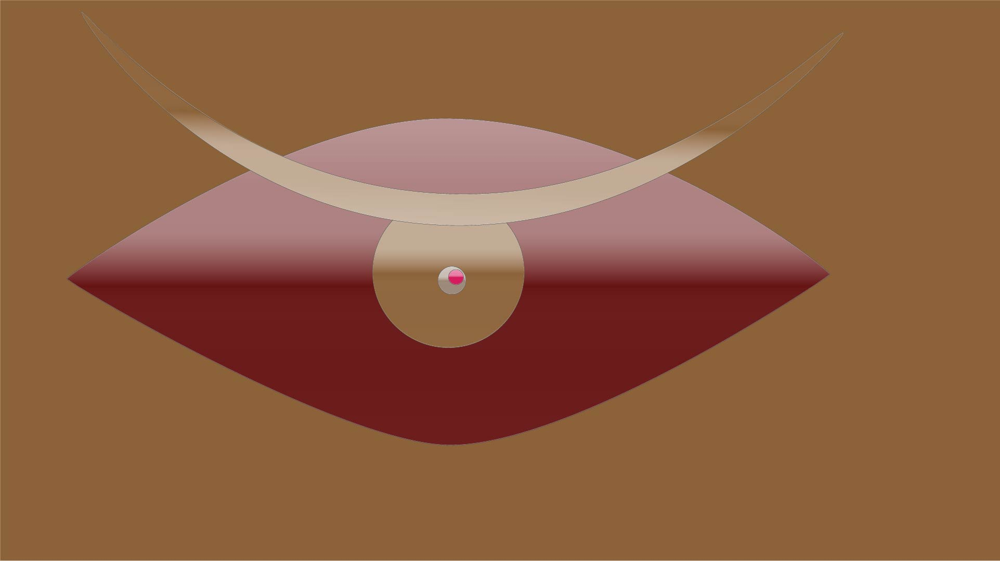

Picture HW #5: Principles of Design
Vector Emotive Eye:

Illustrated Environment:

I briefly remember this photo in my memories, but as I went through it properly, oh oh oh the memories that
this made me remember were vast. I can recite this day with my hands tied to my back. It was a relatively cold
Friday morning. I was a part of scan harbor as a youth instructor about 2 years ago and today we were going on a
trip to yankee stadium. I’ve gone a few times in the past, but it was never an active choice for me to go and
watch them play. I mean in this case, I was most definitely forced to go as I was the only person that knew the
neighborhood at the time and I was kinda liked by the majority of the children(unfortunately). When we did get
inside the stadium itself, I felt a sense of rejection; as if my body had suddenly disowned the walls that
covered the Yankees. At first I didn't know why I felt that way, then I felt him walk on the pitch, the bastard
known as [REDACTED] swung and missed 3 damn times. Then he laughed it off. [REDACTED] then proceeded to do
nothing during the world series and let us lose against…ok they were a pretty good team but on OUR TURF??? I
need [REDACTED] off my team immediately. In the picture, I have properly covered the face of [REDACTED] and his
terrible statline alongside using mostly shades of brown to portray how terrible he is as a player.